01钩子 / 问题
先把失败结果摆到观众眼前
她先演示把 DeepSeek 回答复制进 Word 后格式混乱、排版崩坏的状态，把抽象的兼容问题翻译成一个肉眼可见的损失。随后立刻承诺用一个方法解决，不做背景铺垫。
让 DeepSeek 按 HTML 和指定字体重新输出，再经文本文档复制进 Word，可以比手工排版更快地保留格式。
视频把一个人人能立刻识别的办公痛点，压缩成“失败画面—提示词—操作—成功结果”四步。需要注意，内容口语把 Markdown/富文本兼容问题概括成了“乱码”，概念并不严谨。
让 DeepSeek 按 HTML 和指定字体重新输出，再经文本文档复制进 Word，可以比手工排版更快地保留格式。
不是复述内容，而是标出每一段承担的叙事任务、观众问题和画面证据。
她先演示把 DeepSeek 回答复制进 Word 后格式混乱、排版崩坏的状态，把抽象的兼容问题翻译成一个肉眼可见的损失。随后立刻承诺用一个方法解决，不做背景铺垫。
确认答案内容无误后，她要求 DeepSeek 使用 HTML 格式重新输出，并把字体和字号等要求一起写进提示词。核心不是介绍模型，而是把模型当成格式转换器。
模型生成后先建立文本文档，再把结果复制到 Word。画面展示排版恢复正常，证明这不是一句技巧口号，而是一条可执行工作流。
结尾强调以后不必手工排版，并用“赶紧用起来”完成行动召唤。整条视频的价值单位非常单一：少做一次痛苦的重复劳动。
下列章节覆盖视频的主要论点、步骤与结果；每段都保留时间码和关键画面。
她先演示把 DeepSeek 回答复制进 Word 后格式混乱、排版崩坏的状态，把抽象的兼容问题翻译成一个肉眼可见的损失。随后立刻承诺用一个方法解决，不做背景铺垫。
确认答案内容无误后，她要求 DeepSeek 使用 HTML 格式重新输出，并把字体和字号等要求一起写进提示词。核心不是介绍模型，而是把模型当成格式转换器。
模型生成后先建立文本文档，再把结果复制到 Word。画面展示排版恢复正常，证明这不是一句技巧口号，而是一条可执行工作流。
结尾强调以后不必手工排版，并用“赶紧用起来”完成行动召唤。整条视频的价值单位非常单一：少做一次痛苦的重复劳动。
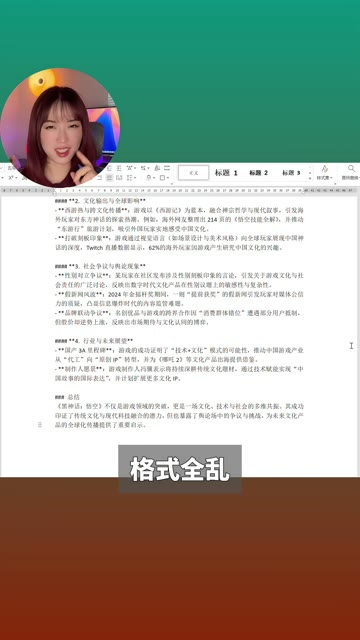
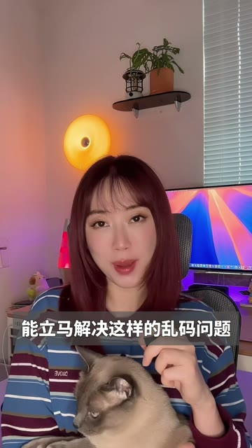
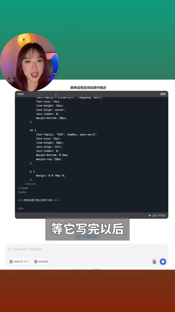
短视频每 1 秒、常规视频每 2 秒、超长视频每 3 秒取一帧。
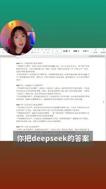
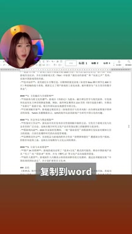
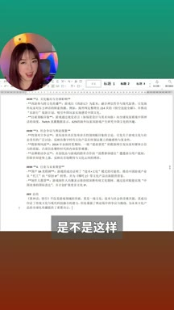
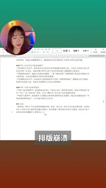
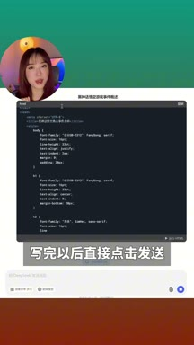
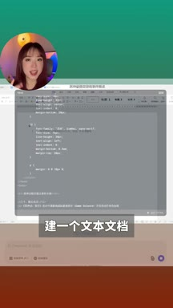
小红书官方 zh-CN 字幕 · 7 段 · 208 字。字幕只记录声音；工具名、界面文字和结果含义必须结合上方视觉知识地图复核。
我发现一个效率神器，你把dipsick的答案复制到word
是不是这样格式全乱，排版崩溃，诶，教你一个神技就能立马解决这样的乱码问题
比如这个回答是你想要的，你现在只需要给到dipstick这段提示词
让它用html格式重新输出，然后你想要什么字体，多大的字体都直接告诉他
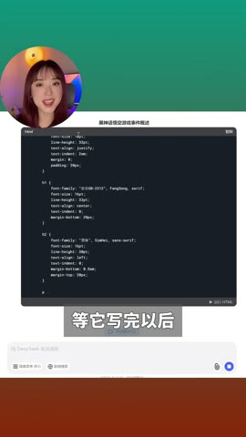
写完以后直接点击发送，等他写完以后建一个文本文档
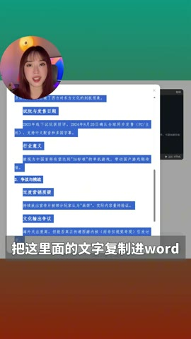
把这里面的文字复制进word，排版格式啥的就全对了
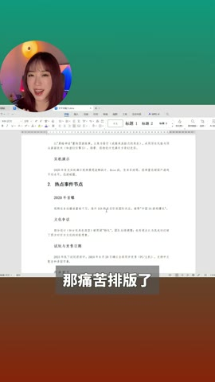
再也不用自己在那儿痛苦排版了，赶紧把这个神器用起来吧
公开数据证明这条笔记获得了高点赞和高收藏，但无法证明播放量、完播率、主页访问或转粉。方法中的 HTML、Markdown 和富文本兼容概念需单独核实。
打开小红书原帖 ↗